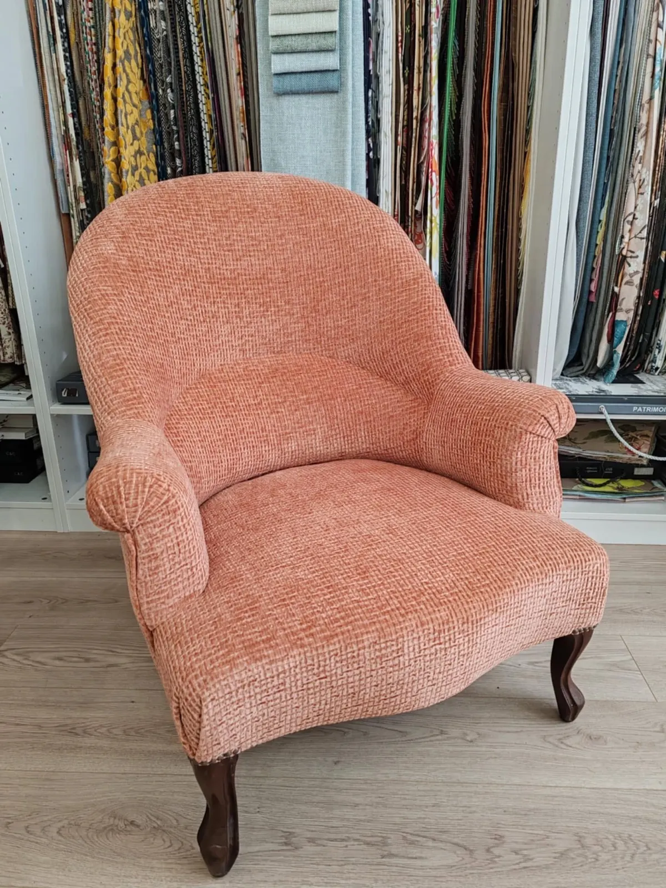
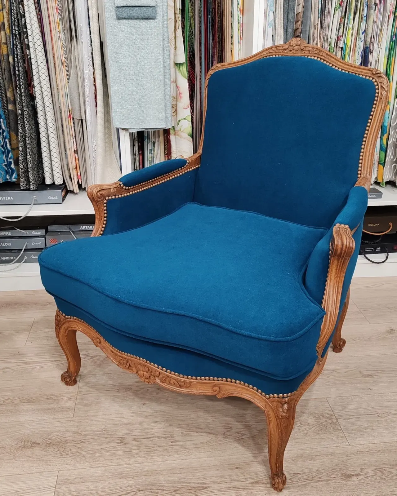
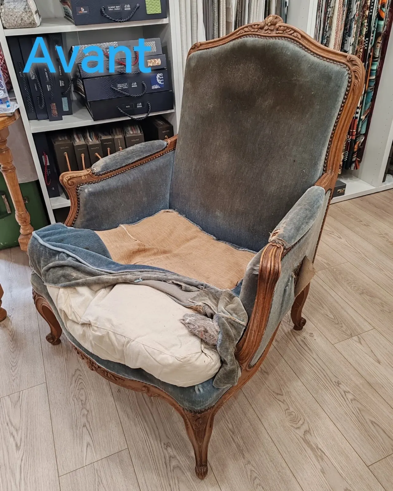
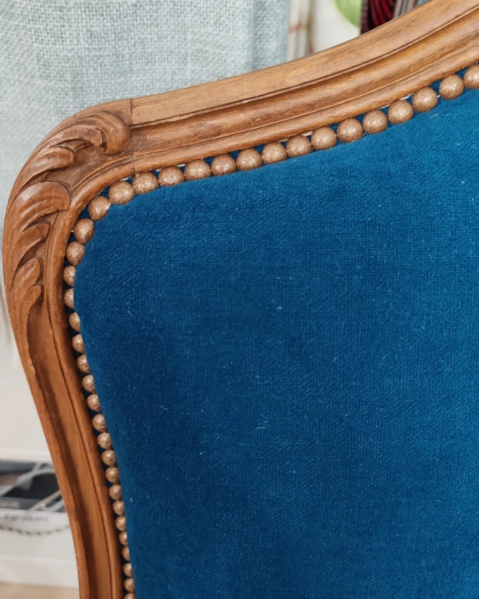
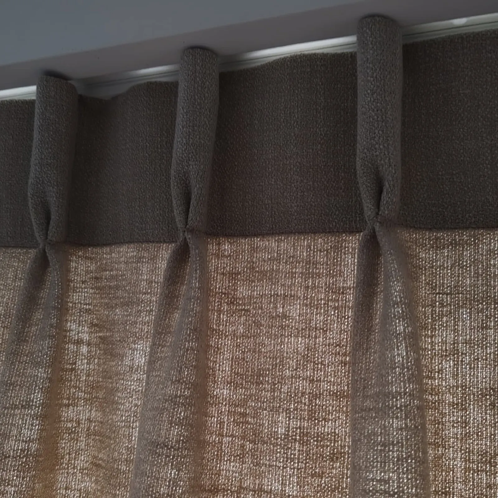
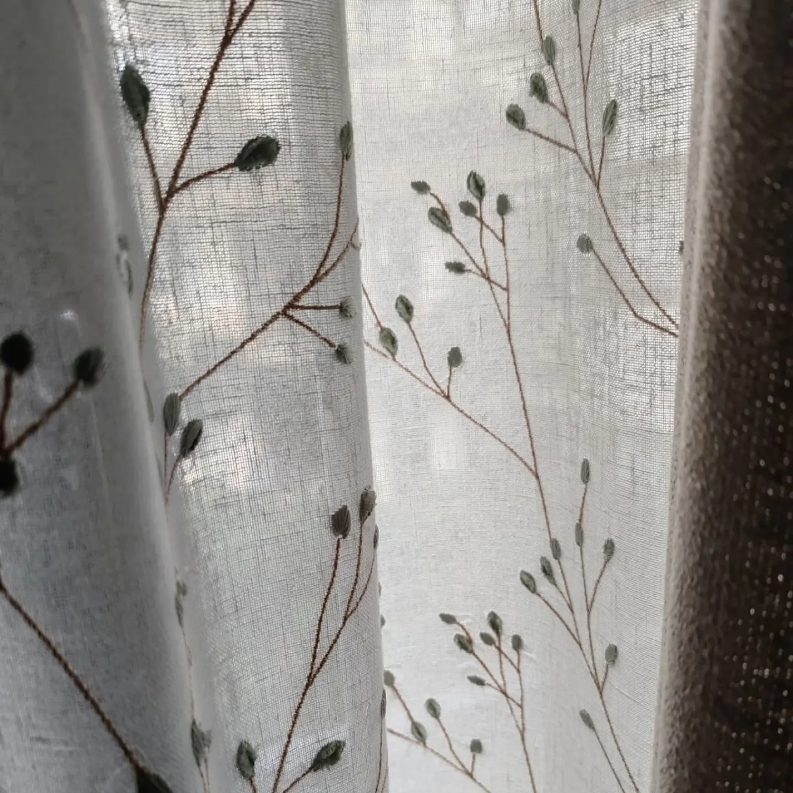
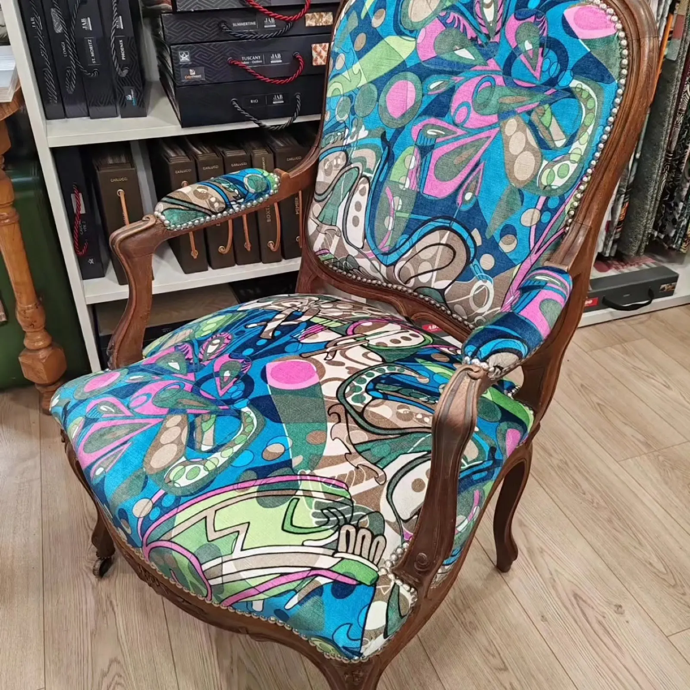
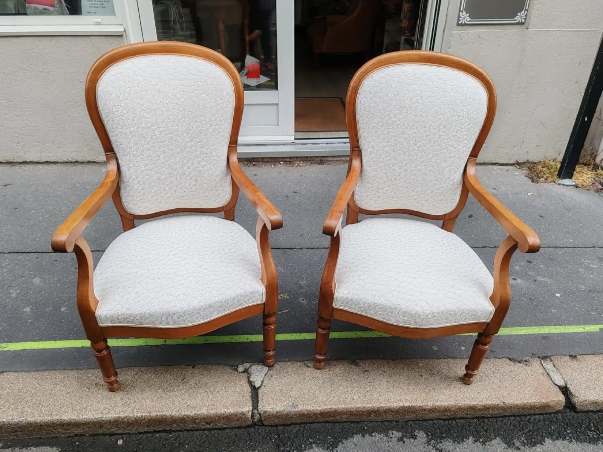
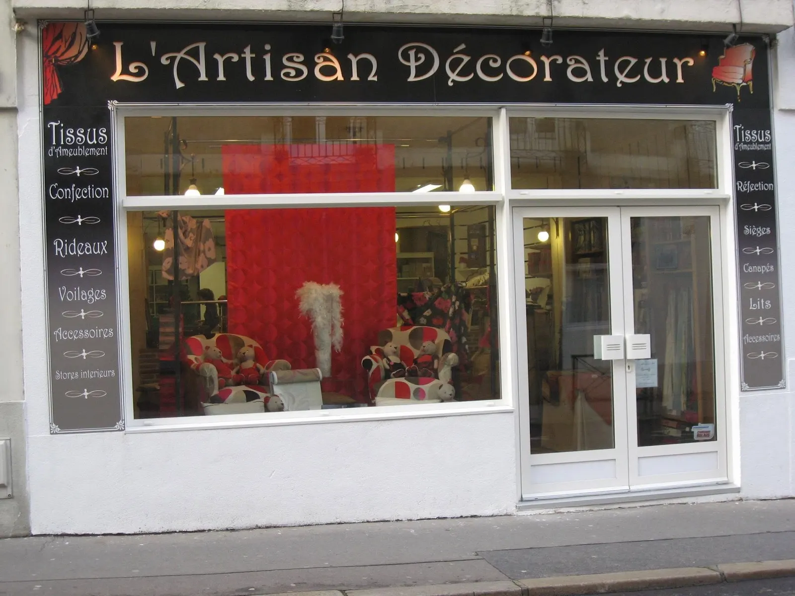

Réfection de sièges
Fauteuil crapaud, tissu Orsay de Camengo.

Nathanaëlle refait vos sièges, confectionne rideaux et voilages, et vous reçoit dans sa boutique de tissus d'ameublement d'éditeurs, 2 rue Yves Bodiguel.
Garnissage refait, tissu neuf, rang de clous le long du bois sculpté : la même bergère, avant et après son passage à l'atelier.
« Réfection totale d'une bergère, elle en avait bien besoin. »Nathanaëlle, à propos de cette bergère


Rideaux, voilages, sièges, accessoires. Les tissus d'ameublement d'éditeurs, comme Casal ou Camengo, se voient en rouleaux à la boutique.

Fauteuil crapaud, tissu Orsay de Camengo.

Plis pincés, lin chiné, posés sur tringle.

Lin écru brodé de branches, à la fenêtre.

Fauteuil Louis XV refait en velours imprimé.
« Être professionnel est une valeur sûre. »
Ces deux fauteuils avaient été malmenés : entièrement refaits, en tissu Nymphéa de Casal, pour être à nouveau choyés.Nathanaëlle


| Mar., jeu., ven., sam. | 9 h 30 – 12 h 30 14 h – 18 h |
| Mercredi | voir la fiche Google |
| Lun. et dim. | Fermé |